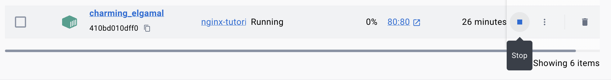

Step 1 - Run a default nginx docker container
Run nginx
docker run -d -p 80:80 nginx:latest
Explanation
- -d means detached, this is optional but it makes it so the container doesn't block the terminal.
- -p 80:80 mean that the ports will be bound to 80 on your machine to 80 inside the docker container
- nginx:latest is the latest nginx server that dockerhub has. You can replace latest with any version of the software you want to run that is in the hub.
Test it Out
Open your browser and go to localhost:80. You should see the default nginx website being hosted on your machine.
Step 2 - Host this website in Docker
Stop the previous docker container by using the Docker Desktop App.
Create your Dockerfile
Create a new file at the root folder at the same level as the Readme.md file. Call it Dockerfile. You should see a blue whale appear next to it.
Add your build code
FROM nginx:latest
COPY ./tutorial /usr/share/nginx/html
Explanation
- FROM needs to be in all caps and lets docker know which base image to use.
- COPY also needs to be in all caps. It will copy our html content into the linux server at the directory where nginx looks for the web page to serve.
Create a Build
docker build -t dockerTutorial:1.0 .
Explanation
- -t means the tag you want to give it. The tag of the server we used before without your code was nginx.
- :1.0 is your versioning number. You can change this number as your version of the page advances while keeping your old images available to view later on.
- . the dot is important. It means tho use this folder to get the build instructions.
Run Your Build
docker run -d -p 80:80 dockerTutorial:1.0
Note that this is the same run command from before but we are now running the dockerTutorial instead of the default nginx.
Test it Out
Reload your localhost:80 page. Tada! You should see this tutorial running on an nginx server in a docker container.
📚Test Your Skills
- Create a new web folder called reflection
- Write a paragraph about what you have learned about docker so far.
- Modify the build file to use your web page.
- Build the image as version 2.0 of the dockerTutorial
- Run your container and show your instructor.
- Then zip and compress this folder with your Dockerfile in it to submit.